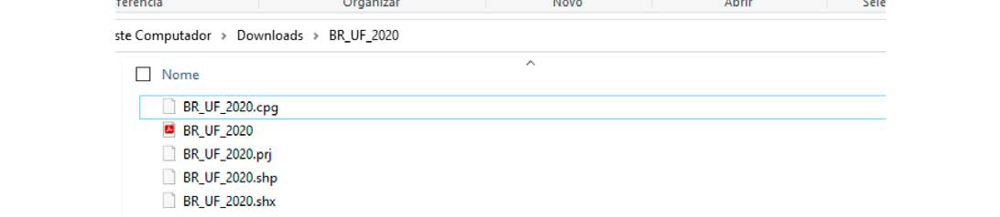
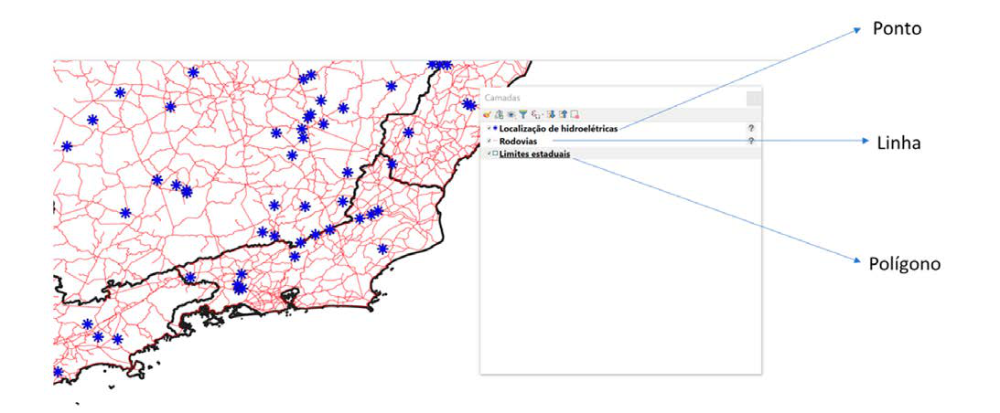
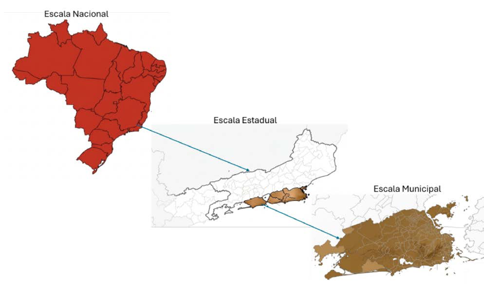

Módulo 3 | Aula 4
Prática SIG I – QGIS e adequação de base de dados
Conhecendo algumas fontes de dados espaciais vetoriais
O formato de arquivo vetorial padrão usado no QGIS é o arquivo de forma ESRI chamado shapefile. Um shapefile consiste, na verdade, de um conjunto de vários arquivos. Os três seguintes são necessários:
- .shp — arquivo que contém as formas vetoriais;
- .dbf — arquivo que contém os atributos no formato dBase;
- .shx — arquivos index.
Shapefiles também podem incluir um arquivo com a extensão .prj que contém as informações de projeção. Embora seja muito útil um arquivo de projeção, não é obrigatório.
Figura 4: Estrutura de um shapefile.

Fonte: Elaborado pelas autoras.
Você lembra que o dado vetorial possui a estrutura geométrica de ponto, linha ou área?
Figura 5: Formas de dados vetoriais.

Fonte: Site QGIS — https://www.qgis.org/
Fontes nacionais de dados
1. Dados geoespaciais e cartográficos
| Fonte | Tipo de Dados | Link |
|---|---|---|
| IBGE | Cartografia oficial, malhas territoriais, dados censitários | https://www.ibge.gov.br/ |
| INPE | Imagens de satélite, monitoramento ambiental | https://www.gov.br/inpe/pt-br/acesso-a-informacao/dados-abertos |
| INDE | Catálogo de geosserviços (WMS, WFS, metadados) | https://inde.gov.br/CatalogoGeosservicos |
2. Dados ambientais
| Fonte | Tipo de Dados | Link |
|---|---|---|
| IBAMA | Fiscalização e dados ambientais federais | https://dadosabertos.ibama.gov.br/ |
| INEA | Dados ambientais estaduais (RJ) | http://www.inea.rj.gov.br/ |
| Observatório Clima & Saúde (Fiocruz) | Relação entre clima e saúde | https://climaesaude.icict.fiocruz.br/ |
3. Dados em saúde pública
| Fonte | Tipo de Dados | Link |
|---|---|---|
| DATASUS (TABNET) | Estatísticas e indicadores do SUS | http://tabnet.datasus.gov.br/ |
| PCDAS | Conjuntos de dados aplicados à saúde | https://pcdas.icict.fiocruz.br/conjunto-de-dados/ |
| PROADESS | Avaliação do desempenho do SUS | https://www.proadess.icict.fiocruz.br/ |
| SISAP-Idoso | Indicadores de saúde da população idosa | https://sisapidoso.icict.fiocruz.br/ |
| RIPSA | Indicadores estratégicos de saúde | https://www.ripsa.org.br/ |
4. Dados socioeconômicos e governamentais
| Fonte | Tipo de Dados | Link |
|---|---|---|
| Atlas do Desenvolvimento Humano no Brasil | IDH, renda, educação, vulnerabilidade social | http://www.atlasbrasil.org.br/ |
| Portal Brasileiro de Dados Abertos | Conjuntos de dados governamentais diversos | https://dados.gov.br/dados/conjuntos-dados |
| Base de dados | ONG – plataforma pública de dados | https://basedosdados.org/search |
Antes de iniciar a busca de um dado geoespacial é importante definir a escala de análise do seu projeto: nacional, estadual ou municipal. Para dados municipais, acesse os sites da prefeitura para verificar a disponibilidade de dados ou solicite à secretaria de urbanismo.
